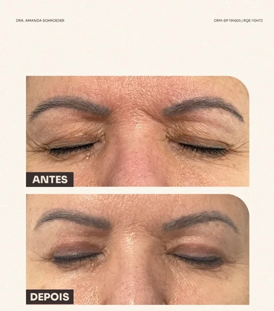
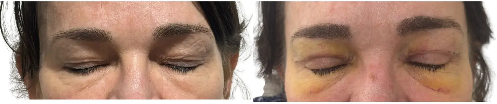

A pálpebra cobre a sombra
Excesso de pele pode esconder parte da pálpebra móvel.
A blefaroplastia pode suavizar excesso de pele e bolsas, preservando o formato dos olhos e a sua expressão. A avaliação também considera sobrancelhas, olho seco, olheiras, assimetrias e a relação com o restante da face.
Foco principal na face. A avaliação integra pálpebras, sobrancelhas e expressão antes de indicar uma técnica.
Dra. Amanda Schroeder · CRM-SP 191605 · RQE 110472 · Clínica LIV Faria Lima, em Pinheiros.

“A pálpebra come a sombra”, “o delineador carimba” ou “parece que não dormi” são descrições comuns. Elas ajudam a iniciar a conversa, mas a causa pode estar em mais de uma estrutura.
Excesso de pele pode esconder parte da pálpebra móvel.
A pele encosta na linha maquiada e transfere o produto.
Pele, sobrancelhas e pálpebras podem contribuir de formas diferentes.
Volume abaixo dos olhos pode persistir mesmo após descanso.
Uma avaliação bem feita separa o que pode melhorar com blefaroplastia do que precisa de outra abordagem ou apenas acompanhamento.
Pode esconder a pálpebra móvel, dificultar a maquiagem e aumentar a sensação de peso.
Podem manter volume sob os olhos mesmo quando a pessoa está descansada.
Pode aumentar o peso sobre a pálpebra e mudar a indicação.
Pigmentação, sulcos e rugas finas podem exigir outras abordagens ou associações.
A blefaroplastia exige cuidado com a função ocular, mas seu resultado também depende da relação entre pálpebras, sobrancelhas, testa, têmporas e terço médio da face. A formação em cirurgia plástica permite organizar essas estruturas em um único planejamento.
Uma sobrancelha baixa, perda de volume ou queda do terço médio podem aumentar a aparência de excesso palpebral. Diferenciar essas causas evita concentrar toda a correção na pálpebra.
O planejamento busca retirar ou reposicionar apenas o necessário, considerando cicatrizes, volumes e suporte para aliviar o aspecto cansado sem descaracterizar o olhar.
Qualidade da pele, sobrancelhas, olheiras ou flacidez facial podem pedir outra abordagem, uma associação cuidadosa ou nenhuma cirurgia naquele momento.
Oftalmologistas — especialmente os que têm formação em cirurgia plástica ocular — também são médicos e podem estar qualificados para realizar blefaroplastia. O diferencial da cirurgiã plástica está na formação cirúrgica voltada ao equilíbrio estético e reconstrutivo do conjunto da face. Quando há sinais de doença ocular, olho seco relevante ou uma questão funcional que exige investigação especializada, a avaliação conjunta com a oftalmologia pode fazer parte do plano mais seguro.
Observe a redução do excesso de pele e a manutenção do formato dos olhos. O objetivo não é padronizar o olhar; resultados, cicatrização e indicação variam.

Imagem autorizada, apresentada com contexto e sem promessa de resultado individual.

A cicatriz continua refinando ao longo dos meses e é discutida antes da decisão.
Resultados insatisfatórios, intercorrências e necessidade de revisão são possíveis. Riscos, limites e alternativas são explicados na consulta.
“Ela me orientou para uma opção mais adequada, respeitando minhas características e particularidades.”Ana Elisa D’AnnibaleAvaliação pública no Google
“Sempre explica tudo com detalhes e tira todas as dúvidas.”Tais MasciaAvaliação pública no Google
A Dra. Amanda examina pálpebras, bolsas, fechamento ocular, olho seco, sobrancelhas, olheiras e assimetrias para diferenciar o que pode ser tratado e o que deve ser preservado.
Entender o que incomoda em fotos, espelho e rotina.
Diferenciar pele, bolsas, sobrancelhas e olheiras.
Formato dos olhos, expressão e características individuais.
Organizar cicatrização, retorno e próximos passos.
A Dra. Amanda é médica e cirurgiã plástica pela UNICAMP, com residências em Cirurgia Geral e Cirurgia Plástica pela mesma universidade, pós-graduação em Cosmiatria pelo Einstein, CRM-SP 191605 e RQE 110472. Essa formação integra anatomia, função, cicatrização e proporções faciais desde a indicação até o acompanhamento pós-operatório.
Nem sempre. Olheiras podem envolver pigmentação, sulcos, bolsas e qualidade de pele.
Depende da extensão da cirurgia e da avaliação médica.
Depende da rotina, da evolução e do tipo de procedimento; isso é organizado na consulta.
Ela é planejada em dobras naturais, mas existe e continua amadurecendo ao longo dos meses.
A equipe informa os horários e orienta o primeiro atendimento. A indicação é definida somente após avaliação médica.